496 | confirm | north
Parked on the north side of Leslie Road, this white car is third car from the right, to the left of a black car.
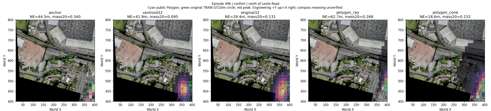
新确认组全部展示；GT仅后验，非人工像素Gold。没有训练新网络。
中文报告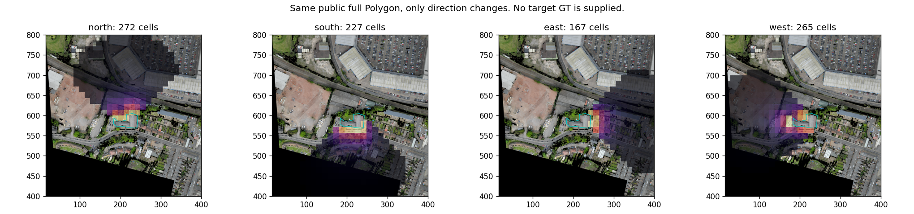
Parked on the north side of Leslie Road, this white car is third car from the right, to the left of a black car.

Parked on the north side of Leslie Road, this gray car is between a white car and a gray car, third car from the left.
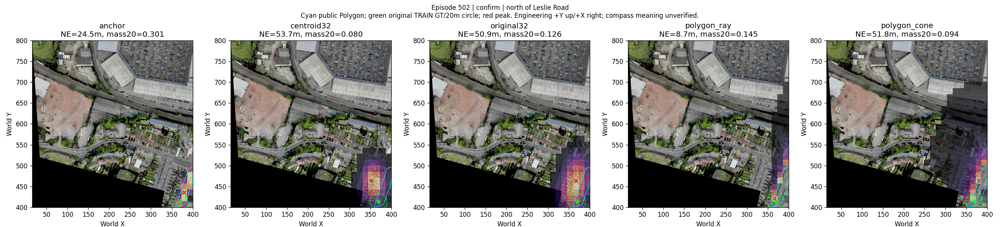
Parked on the south side of Leslie Road, this white car is near another white car and is third car from the left.
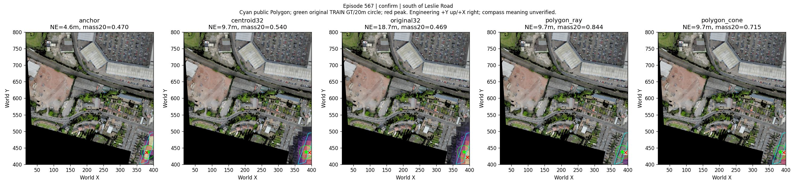
The black car is south of the Nike Factory building and north of the railroad.
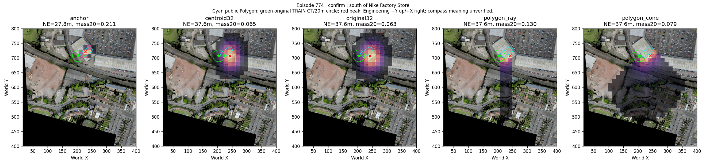
The red car parked just west of the Full Circle Events building.
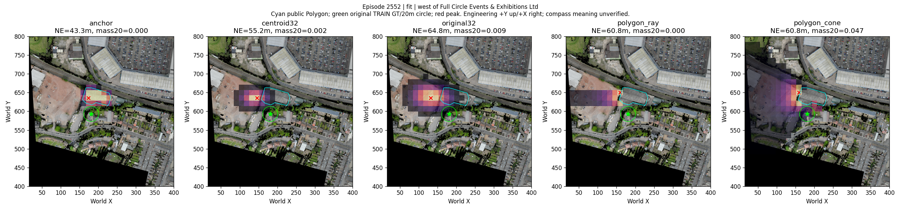
On the north side of Thornbury Road , this brown roofed building is north and to the right of a tree.
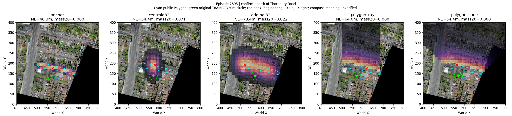
On the north side of Thornbury Road, this large brown roofed building is the leftmost one, next to some blue pavement.
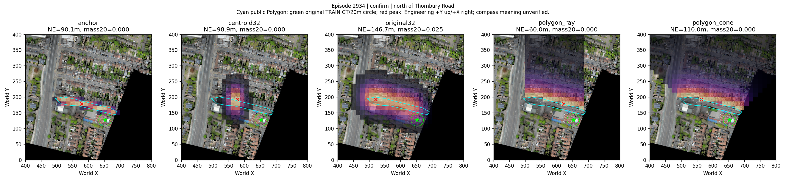
On the south side of Thornbury Road , this gray roofed building is directly to the left of a building next to a parking lot that has a red car parked in it.
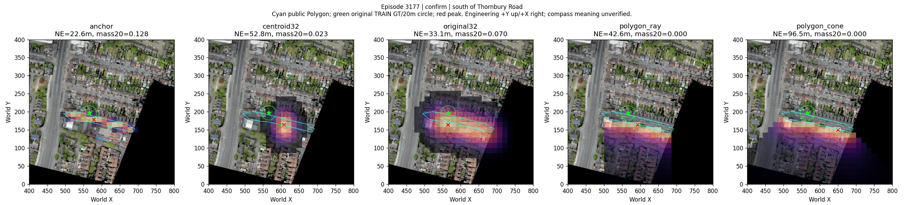
On the south side of Thornbury Road , this gray roofed building is tenth from the left and across from a tree.
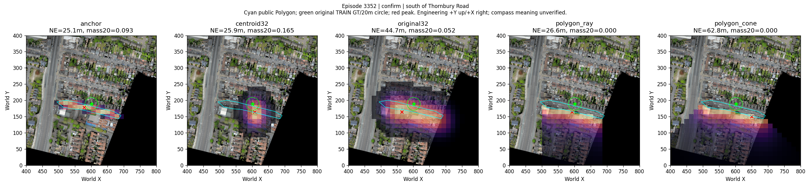
On the south side of Thornbury Road, this gray roofed building is third building from the right, with a more narrow back section.
On the south side of Thornbury Road, this white car is third from the left, to the right of a gray car.
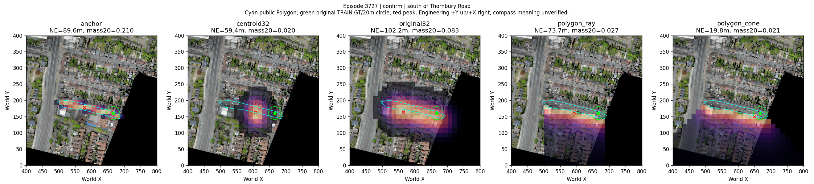
On the south side of Thornbury Road, this gray roofed building is second building from the left.
To the south of W.D.M Cars, this parking lot has a long brown structure near the middle.
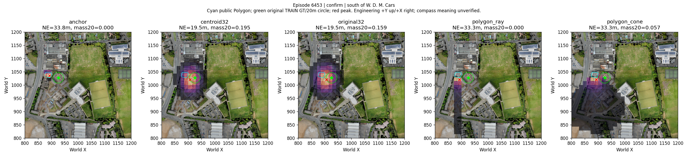
On the south side of Castle Street, this blue roofed building is across the street from Kettle's Yard gallery.
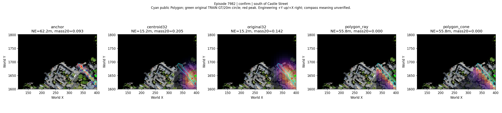
This white car is parked between some buildings to the left of The Hostel and north of Cosin Court.
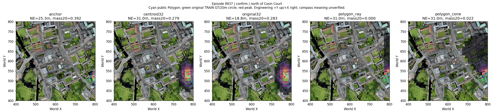
On the left side of Silver Street to the south of Anchor terrace, this dark blue roofed building is directly to the right of Laundress Lane Buildings.
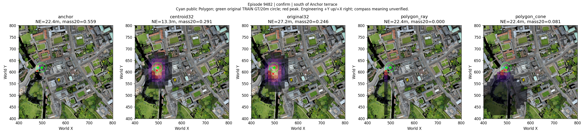
this parking area is north of the Keynes House building and east of the Cambridge Judge Business School building.
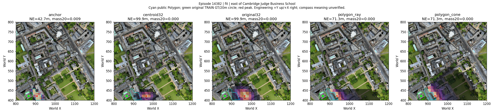
On the south side of Victoria Street, this gray car is across from Unitarian Hall and is to the left of a dark blue car.
On the south side of Victoria Street across from Victoria Hall, this red car is third from the left.
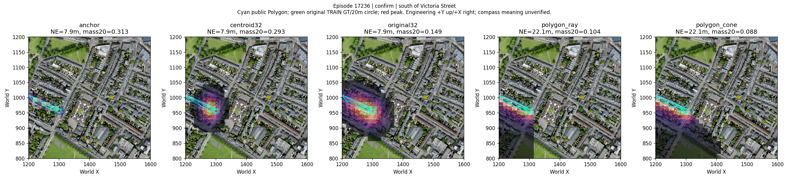
On the south side of Victoria Street to the right of Victoria Hall, this white car is eighth from the right.
On the south side of Prospect Row between Eden Street Adam and Eve Street , this gray roofed building is directly to the left of the Company building.
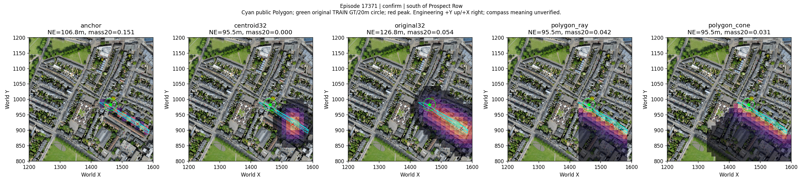
On the south side of Brunswick Gardens near Maids Causeway ,this gray roofed building is separated from the road by a smaller green tree.
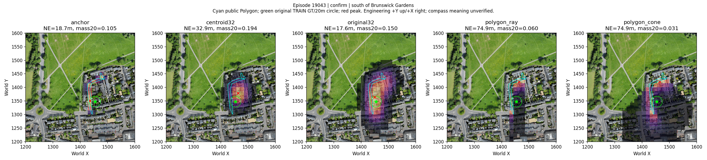
On the north side of Abbey Road, this blue roofed building is on the far left, north of a red car and to the left of a tree.
On the far north side of Manhattan Drive near Belvoir Road, this gray roofed building is fifth from the top, north of a large tree.
On far north side of Manhattan Drive near Belvoir Road, this gray roofed building has a blue car, which is second from the top, parked in front of it.
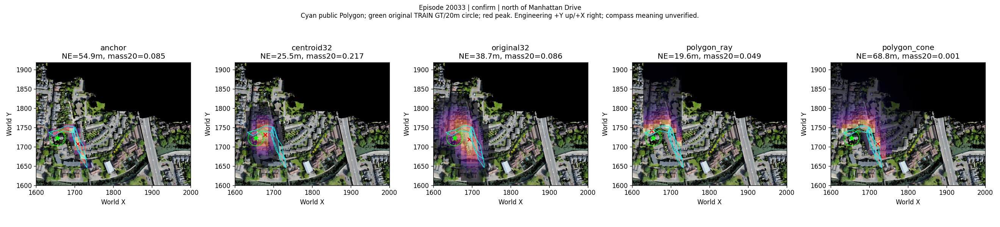
On the north side of Abbey Road near Walnut Tree Avenue, this gray roofed building is to the left of the rightmost patrt of the first building from the right, near a white car.
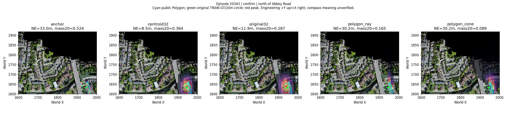
On the north side of Manhattan Drive, this dark blue car is third car from the right.
North of Manhattan Drive on Beaulands Close, this red car parked is parked by itself near a green tree.
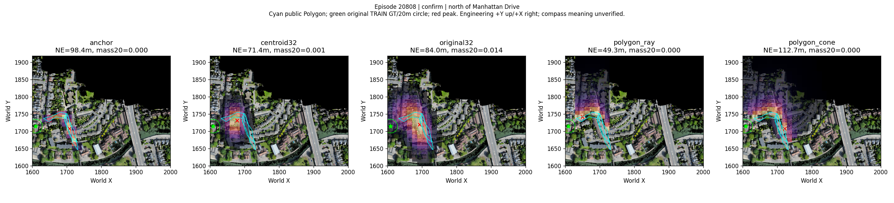
On far north side of Manhattan Drive near Belvoir Road, this blue car is first from the top, south of a tree.
On the south side of Cutter Ferry Path, this parking area is north of a bright red car.
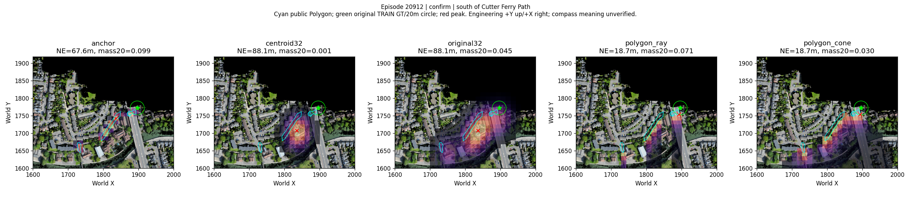
On the south side of Abbey Road near Newmarket Road, this gray roofed building is south of a white car.
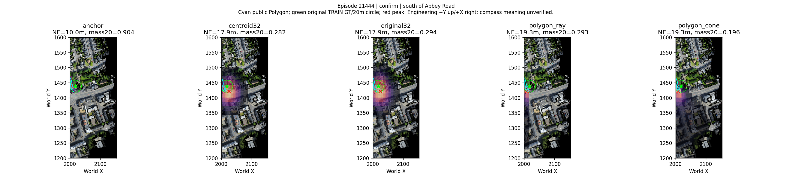
On the south side of Abbey Road, this dark blue car is directly south of a dark green tree and north of a building with a light gray roof.
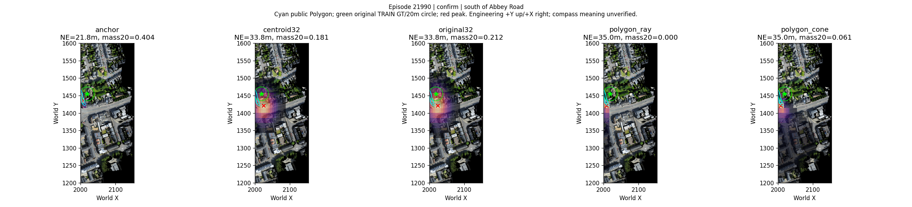
this C-shape green ground is to the left of the Fitzwilliam Museum building and north of Deer Park.
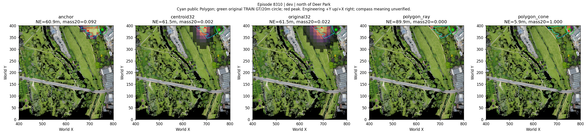
The building north of Gisborne Court Ground. this building has lots of skylights, to the left of the building is the Old Court Ground.
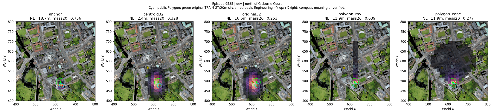
On the south side of Park Street to the right of the Jesus College Forum building, this faint blue car is parked between two dark blue cars.
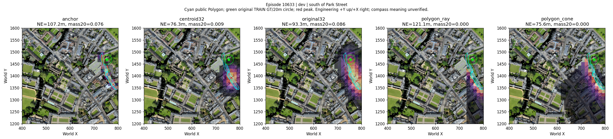
To the right of Senior Combination Room and north of Dining Hall, this building has a blue roof.
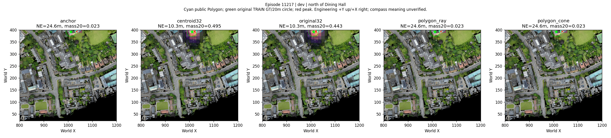